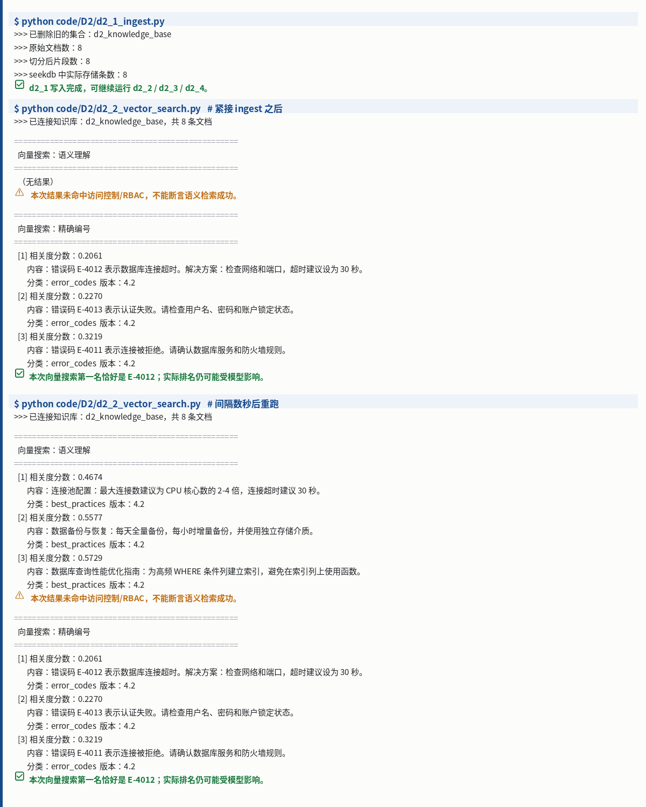

RAG 产品设计与向量数据库
理解 RAG 的基础流程，以及向量数据库中混合搜索的含义与实现。
任务要求
了解 RAG 的基础流程与向量数据库混合搜索含义；跑通 code/D2 的 d2_1 至 d2_2。
- P2 让 Agent 会查资料
- I2 RAG 与向量数据库
实践成果与笔记
⏰ 截止时间：2026-09-23 03:00 📖 产品篇 P2《让 Agent 会查资料 —— RAG 产品设计》+ 产业应用篇 I2《向量数据库与 RAG》
01 实践成果
代码跑通
Task 3 要求跑通 code/D2 的 d2_1 ~ d2_2（注意：d2_3 ~ d2_5 属于 Task 4，本次不跑）。
| 脚本 | 做什么 | 结果 |
|---|---|---|
d2_1_ingest.py | 建知识库：8 条原始文档 → 切分 → 写入 seekdb | ✅ 原始 8 → 切分 8 → 存储 8 |
d2_2_vector_search.py | 向量搜索：① 语义理解查询 ② 精确编号查询 | ✅ 两条查询均返回结果 |
实测截图（真实终端原始输出）：

该图为脚本 stdout 的逐行原样渲染，未做概括或美化。
真实输出摘录
d2_1 写入完成
$ python code/D2/d2_1_ingest.py
>>> 已删除旧的集合：d2_knowledge_base
>>> 原始文档数：8
>>> 切分后片段数：8
>>> seekdb 中实际存储条数：8
✅ d2_1 写入完成，可继续运行 d2_2 / d2_3 / d2_4。d2_2 语义搜索（间隔数秒后重跑）+ 精确编号搜索
$ python code/D2/d2_2_vector_search.py
>>> 已连接知识库：d2_knowledge_base，共 8 条文档
==================================================
向量搜索：语义理解
==================================================
[1] 相关度分数：0.4674
内容：连接池配置：最大连接数建议为 CPU 核心数的 2-4 倍，连接超时建议 30 秒。
分类：best_practices 版本：4.2
...
==================================================
向量搜索：精确编号
==================================================
[1] 相关度分数：0.2061
内容：错误码 E-4012 表示数据库连接超时。解决方案：检查网络和端口，超时建议设为 30 秒。
✅ 本次向量搜索第一名恰好是 E-4012；实际排名仍可能受模型影响。02 一个真实的坑：写入成功 ≠ 立刻可检索
现象
d2_1 写入完成后立即运行 d2_2，第一条语义查询返回「（无结果）」；隔约 5 秒再跑就正常返回 3 条。复现稳定，每次一致。
# 紧接 ingest 之后
向量搜索：语义理解
（无结果） ← 索引尚未就绪
⚠️ 本次结果未命中访问控制/RBAC，不能断言语义检索成功。
# 间隔数秒后重跑
向量搜索：语义理解
[1] 相关度分数：0.4674 ... ← 正常返回 3 条我的判断
collection.add() 返回「写入完成」，指的是数据已落库；但向量检索依赖的 ANN 索引是异步构建的。索引没建好时查询命中 0 条，不代表数据不在、也不代表检索质量差。
值得注意的是：精确编号搜索（E-4012）在两次运行中都正常返回。这进一步说明问题不在数据本身，而在语义（ANN）索引的时序上。
对我的三点启发
- 写入 API 的返回值语义要看清 —— 「add 成功」≠「可被检索」。生产链路里，写入后立刻查询是需要显式处理的时序问题。
- 脚本里的告警要看懂再信 ——
⚠️ 不能断言语义检索成功这次属于假警报，是索引时序导致的，不是检索效果不行。看到告警先问「是数据问题还是时序问题」。 - 这跟 Task 2 的认知是一条线 —— Task 2 我写下「模型负责想，数据库负责记住」；这次补上后半句：数据库"记住"本身也分阶段，落库和可检索不是同一时刻。
03 理解：混合搜索为什么不是"高级玩法"
P2 和 I2 都反复强调同一件事：只要你做生产级 RAG，混合搜索就是基础能力，跟是不是 Agentic 无关。
真实问题天然是"混合"的
课程举的例子，一个提问里同时叠了四类需求：
seekdb 1.2.0 在金融客户环境里的兼容性要求是什么？如果已经部署 1.0.0，升级前要注意什么？
| 需求类型 | 靠什么解决 | 单靠向量检索会怎样 |
|---|---|---|
| 语义理解（用户不会用文档原话） | 向量检索 | ✅ 能解决 |
精确匹配（1.2.0 / 1.0.0 这类版本号） | 全文检索 | ❌ 容易漂 |
| 范围过滤（行业、版本、发布时间） | 标量过滤 | ❌ 做不到 |
| 多跳整合（先找 A 再找 B 再合并） | Agent 编排 | ❌ 单轮检索不可能 |
结论：只用单次向量检索，四类里只能解决一类。
三类检索分工
| 检索方式 | 解决什么 |
|---|---|
| 向量检索 | "怎么表达都能找到" —— 语义近似 |
| 全文检索 | "专有名词和精确信息必须找准" —— 错误码、型号、订单号 |
| 标量过滤 | "只在正确范围内找" —— 权限、租户、状态、时间 |
两路结果怎么合并：RRF
向量分数（距离）和关键词分数（BM25）量纲不同，不能直接相加。RRF（Reciprocal Rank Fusion）的做法是不比分数，比名次：
$$\operatorname{RRF}(d)=\sum_{r\in R}\frac{1}{k+r(d)}$$
其中 $r(d)$ 是文档 $d$ 在某路召回里的排名，$k$ 是平滑常数。这样就不需要假设两个分数可比。
⚠️ 如果非要用加权分数融合，得先校准或归一化各路分数，权重还要靠验证集定 —— 比 RRF 麻烦得多。
一个安全细节（I2）
"先取向量 Top-10，再过滤权限"这个写法很危险：
- 过滤后可能不足 10 条
- 更要命的是 —— 无权限数据可能进入中间处理或日志
安全边界应尽可能在检索阶段生效，而不是检索完再裁剪。
04 归因：AI 答错了，先别怪模型
P2 给了「三层归因框架」，核心判断是：大多数问题在数据层，不在模型层。
对应到我自己要落地的医疗器械场景（研发知识库、注册资料、周报），这个框架尤其有用：
- 问"AI 答错了"，先分：是没检索到（数据/检索层）、还是检索到了但答歪（生成层）、还是需求本身就模糊（业务层）
- 排查顺序应该从下往上，而不是第一反应「换个更好的模型」
05 学习心得
一、RAG 不等于「向量 + 语义检索」
以前听到 RAG，脑子里就是「把文档切了、转成向量、存库、搜最像的几条、丢给模型」。这次看下来，最大的认知修正是：RAG 不单单是向量化加语义检索，做一个 RAG 其实需要很多步骤，其中最重要的还是我们对自己业务场景中数据的准备和认知。
P2 一开头就把前者拆了：RAG 的重点在第一个词 —— Retrieval（检索），不在 Vector。
检索是一整个工具箱：全文检索（错误码、版本号、产品型号）、向量检索（口语化提问、同义表达）、标量过滤（权限、租户、时间、产品线）、图谱跳转、API 调用……向量只是其中一路。
课程里那个例子对我触动最大：用户搜「seekdb 1.2.0 的兼容性」，只有纯向量检索的系统，把 1.0.0 的文档捞了出来 —— 在向量空间里这俩「很像」，但用户要的是 1.2.0。向量懂「意思像」，但不懂「精确」。
所以只用一路检索，出问题几乎是必然的。这也是混合搜索为什么不是「高级玩法」的原因。
二、一个能上线的 RAG，是条六步链路
以前我以为 RAG 就是「检索 + 生成」四个字。实际它是一条完整链路：
数据准备 → 改写 & 路由 → 搜索召回 → 融合 & 重排 → 上下文组织与生成 → 评估与反馈闭环
前三步决定能不能找对，后三步决定能不能答对。课程说得很直白：这条链路里任何一环做差了，最后都会表现成同一句话 —— 「AI 没能解决我的问题」。
这也解释了为什么「换个更好的模型」经常没用：你治的不是真正的病。
三、最重的活是数据准备，而数据准备的前提是懂自己的业务
六步里，被课程标为「最容易被低估、但最影响最终效果」的，是第一步 —— 数据准备。
它不是「把文档丢进向量库」，而是要逐条回答：怎么加载、怎么解析、怎么清洗、怎么切分、怎么补元数据、怎么建索引、怎么更新。
我的落点很直接：这一步没法外包给技术，因为只有业务方知道哪些数据是对的、哪些已经过期、哪些字段必须能精确匹配。
P2 的三层归因框架把这件事说透了：把「AI 答得不好」拆成数据层 / 模型层 / 业务层，课程给的实测比例是 —— 60% ~ 80% 的问题在数据层，真正的模型幻觉只占 10% ~ 20%。
而最常见的错误反应是「换个更好的模型」。这就是误诊：把数据层的病，当成模型层的病在治。
对我自己更有意义的一点：我手上的医疗器械研发场景（仿真数据、测试报告、注册资料），恰恰是「数据准备」最难、也最值钱的地方 —— 文档有版本号、有注册证编号、有生效日期、有权限范围，这些必须精确匹配，光靠语义像不行。
一句话收尾： 一个 RAG 的上限，不取决于你用了多强的模型，而取决于你能不能把正确的信息找回来 —— 而能不能找回来，首先取决于你对自己的数据有多清楚。
06 完成情况
- [x]
code/D2d2_1 ~ d2_2 跑通 - [x] 学习心得（见上节 05）
- [x] GitHub 打卡提交（2026-09-22）
记录：2026-09-21 ｜ 实验环境：WSL + Python 3.12.3 venv ｜ 模型：DashScope qwen3.7-flash